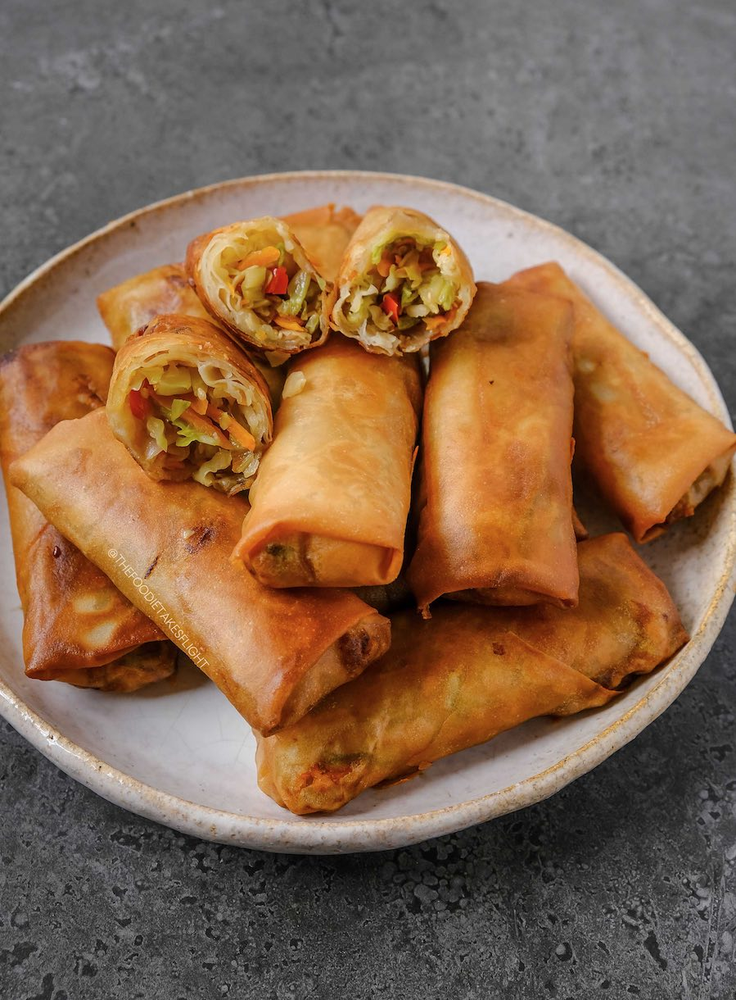

Lumpiang Togue

Description
Lumpiang Togue is a variation of my favorite meaty lumpia. Instead of meat, Mung bean sprouts (locally known as togue) can be used as the major ingredient. This dish is a popular appetizer and snack in the Philippines and it is best eaten when dipped in spicy vinegar with onions and whole peppercorn.
Ingredients
- lb mung bean sprouts
- 1 carrot julienned
- 4 cloves garlic chopped
- 1 onion sliced
- 1/4 cup dried shrimp
- 8 ounces fried tofu diced
- 1/8 teaspoon ground black pepper
- 2 tablespoons fish sauce
- 15 pieces lumpia wrapper
- 2 cups cooking oil
Steps
- Heat a wok or a frying pan and put-in 2 tablespoons of cooking oil.
- When the oil is hot enough, Sauté the garlic and onions.
- Add the dried shrimp. Cook for 1 minute.
- Put-in the fried tofu then stir.
- Add the fish sauce and ground black pepper.
- Put-in the mung bean sprouts and cook for 2 minutes.
- Add the carrot and cook for 1 to 2 minutes. Remove from the pan and let cool.
- Wrap the cooked vegetable in spring roll (lumpia) wrapper.
- Pour the remaining cooking oil in a cooking pot or deep fryer then apply heat.
- Deep fry the wrapped lumpia until the color of the wrapper turns golden brown.
- Remove from the cooking pot or deep fryer and place in a container lined with paper towel to absorb excess oils.
- Transfer to a serving plate
- Serve with vinegar and onion dip.
- Share and enjoy!
Home